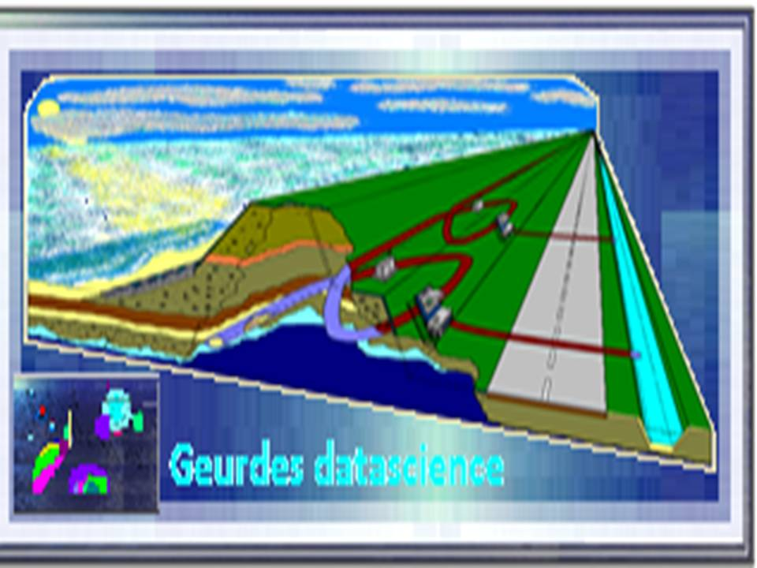

GEURDES DATA SCIENCE GDS
| Contact: |
J.F. Geurdes BSc, MSc, PhD
|
| Email: |
han.geurdes@gmail.com
|
| Telephone: |
+31623078424
|
Introduction GDS
Mission:
Geurdes Data Science start-up is devoted to build data science based solutions to monitor and mitigate negative environmental effects
of breakwaters, hydropower dams and tidal energy convergence plants.
The focus of our attention is on erosion
of geo-environments of sediment obstructions. One can think of geo-enviroments
such as riverbanks of hydropower dams or coastal areas of breakwaters.
Placement of tidal turbines also entails the possibility of severe coastal erosion [1].
We create the data analytic software to monitor the effect of the configuration.
Breakwaters, hydropower dams and tidal turbine plants change the distribution of sediment.
The erosion of the geo-environment is caused by the abrasive activity of water lacking sufficient
amounts of sediment.
Analysis:
The basis of our data science approach to environmental erosion is to analyze time series of
sensor readings. In this sense we are "Internet of Things" (IoT) related.
In the analysis, we study the random fluctuation of variables like pressure, water level
and temperature in the geo-environment.
The analysing algorithm is based on
random dynamical system theory.
We tested our algorithm on dike data from dikes in the Netherlands.
The software plus IoT can therefore also be used to monitor dike safety.
Vision:
When the progression of erosion of a coastal area or riverbank is established, one of the mitigating measures can be to
use tidal energy conversion turbines to change the direction of the flow of the abrasive energy.
With the tidal turbines we are able to change the direction and/or energy of flow in the downdrift
water and generate electricity at the same time.
As an example let us look at a breakwater. It is well known that downdrift a breakwater, severe erosion of the coast occurs.
A paradigm case of severe erosion through downdrift sand hunger is the breakwater configuration at Mar del Plata, Argentina
[2].
If tidal energy conversion turbines are placed in the downdrift area they can change the direction of the abrasive energy
of water on the coastal zone. Our software plus sensor IoT approach can deliver the proof that the placement of the turbines is such that
a warding off of
abrasive energy actually diminish coastal erosion. In this way tidal energy is generated,
the harbor is protected with breakwaters and coastal erosion is mitigated.
Model:
The algorithm of the data analytic software is based on random dynamical systems theory
[3].
Readers interested in the algorithm can find more information here.